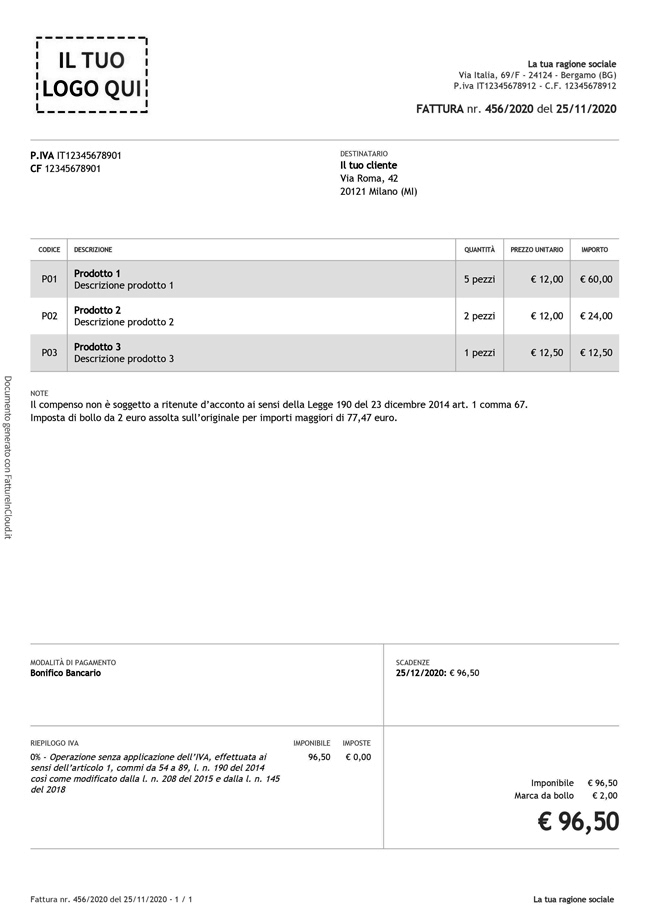
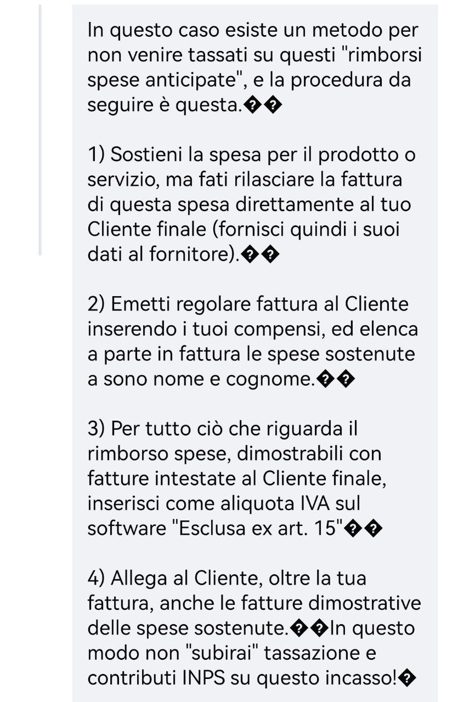

🔴ФАКТУРЫ, ВЕДЕНИЕ ИП
Вот группа в FaceBook, которую ведет итальянец dottore commercialista, написавший книгу от А до Я режима forfettario. В группе можно задать вопрос и он пару раз в неделю на них отвечает совершенно бесплатно.
Оставленный для архива пример заполнения бумажной фактуры для режима forfettario
По этой ссылке коментарии

Сначала пост из "соседней" группы (вот ссылка на оригинальный пост в этой группе и наш репост в нашей группе, чтобы можно было почитать контекст обсуждения
❓Обязательные счета-фактуры при реализации товаров или услуг физическим лицам.
➡️Положения законодательного декрета 145/2023 вступили в силу: одним из нововведений, предусмотренных вступившей в силу редакцией, стало требование обязательного выставления электронных счетов-фактур для операторов, работающих в сфере B2C.
Вступившие в силу изменения предполагают, что получатель услуги или покупатель товара – физическое лицо, сможет просматривать счета фактуры на приобретенные услуги или товары в своем электронном налоговом кабинете, даже если не запрашивал этого специально.
Освобождение от выставления счетов-фактур в отношении товаров и услуг, реализованных физическим лицам, распространяется только на субъектов, осуществляющих розничную торговлю (и соответственно – использующих кассовый аппарат).
👉Следует напомнить, что с 2024 года обязанность выставлять счета фактуры в электронной форме распространяется на ИП и юридических лиц, выбравших для себя «упрощенный» налоговый режим (forfettario).
Данные изменения могут напрямую коснуться тех, кто переехал в Италию и получил (запросил) вид на жительство по основанию автономной работы, так как зачастую многие соотечественники вынуждены были показывать дополнительные доходы именно в форме оказания услуг физическим лицам.
Самый частый случай – оказание различных услуг физическим лицам нерезидентам.
На самом деле подобные операции не являются ноу-хау, похожие методы корректирования декларируемого дохода применяются по всему миру и хорошо известны в том числе итальянским налоговым органам. Отсюда – необходимость подтверждения реальности операций, то есть – каждый выставленный счет фактура в идеале должен сопровождаться банковским переводом. Если этого нет – начинается поиск подходящих вариантов, на которые, как назло, обращают внимание налоговые органы, но не только они – квестура тоже неплохо понимает суть «бухгалтерских технологий», и бывает, подвергает некоторым сомнениям операции соискателей вида на жительство.
А там не менее еще в 2022 году Агентство по доходам подтвердило в своем Циркуляре 26/E/2022 что итальянские «упрощенцы» обязаны сообщать о факте оказания услуг в пользу потребителей – физических лиц, если те находятся за рубежом.
Возвращаясь к необходимости подтверждать реальность операции банковским переводом мы возвращаемся к вопросу – можно ли, имея в Италии юридическое лицо или будучи зарегистрированным итальянским ИП иметь расчетный счет в зарубежном банке и получать на него оплату за услуги, оказанные своим зарубежным клиентам?
Общий ответ: можно, различия в правовых последствиях заключаются лишь в некоторых деталях (будет ли этот счет находиться в пределах Евросоюза, действует ли на территории государства Модельная конвенция ОЭСР, хранится ли на зарубежном счете средства или он используется только для «транзита» средств и т.д.).
В любом случае, зарубежный счет подлежит ежегодному декларированию и, в некоторых случаях, приводит к возникновению обязанности уплачивать налоги. В частности, необходимо отражать средства, хранящиеся на зарубежном счету в разделе RW налоговой декларации и, при необходимости, уплачивать IVAFE (налога на зарубежные финансовые активы).
В данной заметке намеренно не рассматриваются подробности и детали – их в каждом конкретном случае может быть великое множество, главная цель – показать взаимосвязь различных фактов и действий, показать как миграционные вопросы пересекаются с налоговыми и валютными.
Отсюда вывод – планирование и еще раз планирование! Перед каждым действием помните, что результат может повлиять не только на обязанность по уплате налогов но и на миграционный статус.
Текст от итальянского коммерчиалиста
Buongiorno,
A partire dal prossimo 1.1.2024, tutti i contribuenti forfetari e minimi (senza più esoneri per soglia) devono emettere fatture nel formato elettronico tramite il Sistema di interscambio, anche per le fatture nel settore privato.
Lo prevede, com’è noto, l’articolo 18, D.L. 36/2022 (misure per l’attuazione del PNRR) che è intervenuto eliminando dal comma 3, dell’articolo 1, D.Lgs. 127/2015 (disciplina della fatturazione elettronica nel settore privato) la parte della norma che, fino allo scorso 30.6.2022, contemplava, invece, l’esonero sine die: per i contribuenti in regime forfetario, di cui all’articolo 1, commi da 54 a 89, L. 190/2014 e; per i soggetti in regime di vantaggio, di cui all’articolo 27, comma 1 e 2 D.L. 98/2011 (minimi “residuali”).
La novità citata, contemplata all’articolo 18, comma 3, D.L. 36/2022,
“si applica a partire dal 1° luglio 2022 per i soggetti che nell’anno precedente abbiano conseguito ricavi ovvero percepito compensi, ragguagliati ad anno, superiori a euro 25.000, e a partire dal 1° gennaio 2024 per i restanti soggetti”.
Come precisato nella FAQ n. 150 del 22.12.2022, la norma va interpretata nel senso che per tutti i soggetti per i quali l’obbligo non è decorso fin dallo scorso 1.7.2022“l’obbligo decorrerà dal 1° gennaio 2024 indipendentemente dai ricavi/compensi conseguiti nel 2022”.
Si tratta, ovviamente, di una decorrenza senza mai più ritorno al regime analogico (si pensi, ad esempio, ad un ex ordinario – già obbligato alla fatturazione elettronica dal 2019 – che entra successivamente in regime forfetario).
L’allargamento dell’obbligo di fatturazione elettronica, anche ai piccoli soggetti in questione, è ascrivibile all’autorizzazione n. 2021/2251/UE, con cui l’Italia è stata autorizzata ad imporre – fino a fine 2024 – il formato elettronico, estendendolo (a differenza della precedente decisione 2018/853/UE) anche ai c.d. soggetti in franchigia.
Rimane ovviamente fermo che, anche per i forfetari/minimi residenti:
l’obbligo della fatturazione elettronica riguarda le fatture verso i soggetti residenti/stabiliti (verso i non residenti rimane valida la fattura analogica, salvo – come diremo – l’onere della comunicazione esterometro che, dallo scorso 1.7.2022, va gestito con le medesime modalità – XML – della fattura elettronica);
la fattura elettronica è comunque già da tempo obbligatoria, ai sensi dell’articolo 1, comma 209 e seguenti, L. 244/2007 e D.M. 55/2013) per le forniture verso le pubbliche amministrazioni individuate dall’ISTAT nell’elenco delle amministrazioni inserite nel conto economico consolidato (circolare n. 9/E/2019 4.1);
l’uso della fattura elettronica rimane, tuttavia, vietato (ci sarà proroga anche per il 2024) per le fatture oggetto di invio dei dati al Sistema tessera sanitaria, a norma dell’articolo 10-bis, D.L. 119/2018, nonché per i soggetti non tenuti al suddetto invio, con riferimento alle fatture relative alle prestazioni sanitarie effettuate nei confronti delle persone fisiche, ai sensi dell’articolo 9-bis, D.L. 135/2018.
Casistiche
Obbligo fatturazione elettronica
Fatture verso PA DM 55/2013
SI, fattura elettronica PA
Fatture verso non residenti/stabiliti
NO, fermo restando (esportazioni escluse) obbligo comunicazione esterometro
Fatture verso stabiliti da parte di forfettari/minimi con ricavi/compensi 2021 > euro 25.000 (*)
SI, obbligo fatturazione elettronica dal 1.7.2022
Fatture verso stabiliti da parte di forfettari/minimi con ricavi/compensi 2021 ≤ euro 25.000 (*)
SI, obbligo Fatturazione elettronica dal 1.1.2024 (già dal 2023 nel caso di forfetario che esce immediatamente dal regime nel caso di superamento della soglia di euro 100.000)
Altre imprese/professionisti per fattura verso residenti/stabiliti (*)
SI, obbligo Fe generalizzato dall’1.1.2019 (obbligo anticipato dall’1.7.2018 per subappalti PA e fornitura carburanti per motori, tranne quelli effettuati presso impianti stradali)
(*) La fattura elettronica è vietata per le prestazioni, verso privati, nel settore sanitario.
Infine, giova evidenziare che l’obbligo della fatturazione elettronica determina, pur in vigenza di regime forfetario, una serie di effetti così sintetizzabili:
l’obbligo della fatturazione elettronica trascina l’obbligo dell’esterometro (il comma 3-bis, dell’articolo 1, D.Lgs 127/2015, vive, infatti, di luce riflessa del comma 3, nel quale, come detto, non è più previsto l’esonero della fatturazione elettronica per i forfetari e minimi); va da sé, ovviamente, che nel caso specifico di acquisti in reverse charge comunicati al fisco tramite l’esterometro, particolare attenzione dovrà essere prestata anche sull’obbligo del versamento, tramite F24, della relativa Iva entro il 16 del mese successivo (come conferma anche la circolare n. 32/E/2023); non essendo previsti codici ad hoc, si ritiene debbano essere utilizzati gli ordinari codici tributo previsti per il versamenti mensili dell’Iva (6001 … 6012);
l’assolvimento dell’imposta di bollo sulle fatture elettroniche va eseguito in modalità elettronica, ai sensi del D.M. 17.6.2014 (non è quindi più possibile – a differenza delle fatture cartacee – l’assolvimento tramite contrassegno);
l’obbligo della fatturazione elettronica determina l’obbligo della conservazione sostitutiva delle fatture attive e di quelle passive ricevute (in vigenza dell’esonero – come precisato nella circolare n. 9/E/2019 4) il forfetario non aveva, invece, l’obbligo di conservare digitalmente delle fatture elettroniche ricevute, nemmeno se consegnate all’indirizzo telematico registrato sul portale dall’Agenzia delle Entrate, fermo restando, invece, l’obbligo di conservazione analogica); si ricorda che per la conservazione delle fatture elettroniche è possibile aderire (tramite il portale F&C) al servizio gratuito offerto dall’Agenzia delle entrate;
l’obbligo della fatturazione elettronica impatta, infine, anche sui clienti operatori Iva residenti che – dal 2024 – dovranno necessariamente pretendere, anche da parte di minimi e forfetari, il recapito di fatture elettroniche (la fattura cartacea si considera non emessa), pena l’obbligo di dover attivare la procedura dell’autofattura denuncia TD20 per non incorrere nella sanzione di cui all’articolo 6, comma 8, D.Lgs 471/1997, come previsto dall’articolo 1, comma 6, D.Lgs. 127/2015).
Tra i software piu economici sul mercato c’è quello di fatturazione elettronica di Aruba.
Gentile cliente provveda ad attivare, a far data 01/01/2024, la propria posizione con la software house prescelta indicando le seguenti codifiche :
REGIME FISCALE
RF19 - Operazione senza applicazione dell'Iva ai sensi dell' art.1 co. 54-89, della legge n. 190/2014 così come modificato dalla legge n. 208/2015 e dalla legge n. 145/2018
CAUSALE DOCUMENTO
Descrizione causale: Operazione non soggetta a ritenuta alla fonte a titolo di acconto ai sensi dell'articolo 1, comma 67, l. n. 190 del 2014 e successive modificazioni
CASSA PREVIDENZIALE 1
TC22 - INPS, Aliquota cassa 4% su 100% dell'imponibile, Codice IVA 0% - N2.2 - Non soggette - altri casi
DATI BOLLO
Importo 2,00 €: Imposta di bollo assolta in modo virtuale ai sensi dell'art. 15 del D.P.R. 642/1972 e del DM 17/06/2014 e ss.mm (http://ss.mm/).
Lo Studio rimane a disposizione per ogni eventuale dubbio o chiarimento
См. пост в канале ->
Дополнение-нюанс
Стоит уточнить, что для коммерсантов, торгующих он-лайн, схема работы в основной части не меняется: если просит клиент фактуру, выставляем её электронно, если не просит - не выставляем. В обоих случаях обязательно вносим операцию в registro dei correspettivi, который ведём или в экселе, или в бумажном виде.
См. пост в канале ->
🔥 Как правильно выставлять фактуры на режиме форфеттарио подробная статья с перечислением обязательных формулировок! (не забываем указывать в фактурах!) Также в статье поясняются нюансы выставления фактур клиентам не только в Италии, но и в ЕС, за пределами ЕС, b2b, b2c и другие важные детали.
По сути, составляете и отправляете ту же самую фактуру, но только в типе документа нужно выбрать вместо фактуры, нота ди кредито там выпадающий список есть. Думаю в любом сервисе фактурирования есть такая функция, это довольно базовые фискальные операции, чтобы разработчики их упустили
Может быть кому-то тоже будет полезно. Я на днях выставляла счет клиенту из другой страны ЕС, есть свои особенности по работе с такими клиентами:
1. регистрация в VIES (об этом уже говорили, сделать достаточно просто онлайн или в agenzia)
2. при выставлении электронной фаттуры клиенту нужно отправлять счет (он его не увидит в системе)
3. В codice destinatario должно быть указано XXXXXXX (7 раз "X"), обычно программы при указании страны подставляют автоматом, но Taxman у меня почему-то при редактировании поменял страну на Италию, и это поле изменилось
4. Как уже тоже обсуждали, в основном НДС не возникает. Необходимо выбрать для услуг в качестве основания N 2.1 – non soggette ex artt. da 7 a 7-septies
5. Необходимо указать "inversione contabile"
Я прочитала несколько источников при подготовке, наиболее полные:
https://www.danea.it/blog/prestazioni-di-servizi-extra-ue/
https://studiosgsrl.it/i-nuovi-codici-natura-operazione-utilizzabili-dal-2021/
🖍 См. пост в канале ->
Ещё инструкция на тему заполнения фактуры на сайте адженции
Fattura elettronica per i privati esteri fuori CEE sul sito dell’Agenzia delle Entrate, quindi senza PIVA e CF:
⭐️ в секции Cliente в поле PIVA (даже если клиент PRIVATO) заменить код страны с IT на код страны клиента. В моем случае, CH для Швейцарии.
⭐️ в буквоцыфровом поле после кода страны (все там же в строке PIVA) внести буквоцыфровой код.
• для Agenzia delle Entrate не важно какой это код. Либо это действительно иностранный CF, если у клиента есть таковой. Либо придумываете код из имени, фамилии клиента и цифр. Он для вашей анаграфики.
• Я спросила можно ли все «0». Сказали можно, но посоветовали каждому клиенту придумать свой. Им не важно.
⭐️ поле Codice fiscale оставить пустым
⭐️ поле CAP - 00000
⭐️ и 0000000 соответственно как codice destinatario
🖍 См. пост в канале ->
В каких случаях на форфеттарио, работающих с иностранными клиентами, нужно платить НДС и сдавать моделло INTRASTAT, а в каких не нужно.
Ссылка на статью с разъяснениями.
🖍 См. пост в канале ->
Привет! Апдейт по Интрастат: получилось подать модули самостоятельно. Если вкратце, то не ходите дети в Африку играть не рекомендую, у меня это заняло очень много времени - я разбиралась сама с нуля. На руках была только старая декларация от прежнего бухгалтера и часто неработающий сайт Таможни (у него тоже есть нерабочее время) 😁 Если кратко: челлендж №1 - установить программу Intr@web с сайта ADM (Dogana). Версию 2025 года (в отличие от предыдущей) удалось поставить на мой старенький личный HP c Windows 10 Pro (на Macbook это так и не получилось сделать) челлендж №2 - понять, как получить доступ для отправки. Оказалось, модуль для запроса авторизации есть на сайте ADM, там же описана процедура. И сначала модуль необходимо отправить телематически, а потом уже прийти за авторизацией. Обязательно проверьте, к какому офису Таможни прикреплен адрес - у меня это было совсем не очевидно челлендж №3 - при походе в Таможню у вас на входе, возможно, заберут ID, но в кабинете для выдачи документов он тоже нужен 😄 - делайте фото или копию документа, если нет другого челлендж №4 - после того, как выдали авторизацию, необходимо завершить её онлайн регистрацию на сайте ADM в течение 30 дней, иначе аннулируют челлендж №5 - программа для заполнения модуля у меня вызвала ностальгический скрежет в зубах - я такое последний раз видела на уроках информатики много лет назад. Но к ней есть инструкция, без её прочтения понять ничего не возможно челлендж №6 - вам нужна цифровая подпись. Это может быть авторизованная подпись из списка PDF - 323kb (у меня Аруба), но оказалось, что можно и подписью самой Dogana или Agenzia delle entrate подписать - тогда это можно сделать в самом приложении челлендж №7 - в программе достаточно 1 раз заполнить свои данные (пройдя регистрацию на сайте с данными авторизации), дальше будет проще. Дальше логика примерно такая: создать Elenco, сделать его approvazione, подготовить к отправке, потом подписать цифровой подписью, и файл загрузить на сайт ADM челлендж №8 - для загрузки файла в первый раз, сначала нужно протестировать загрузку файла в Тестовой среде. После успешной загрузки без ошибок, нужно выдать самим себе разрешение на использование Ambiente reale. Только после этого доступна загрузка в живой среде. После загрузки сразу приходит отбивка о результате и наличии ошибок. Если есть ошибки - проще писать в поддержку, они отвечают
Есть много ньюансов с использованием кодов для доступа, кодов вида деятельности, использования софта и т.п. Я отмучилась своё в этом вопросе, сейчас уже вроде полегче. Кстати, надо отдать должное, я почти отчаялась, и оплатила услугу подачи Интрастат Taxman, но потом разобралась, и попросила отменить её. Они сразу ответили, и сказали, что вернут деньги
Как посмотреть уже выставленные и проведенные фактуры для иностранных клиентов в личном кабинете налоговой?
Чтобы посмотреть фактуры, которые выставлены итальянцам:
В разделе «Home consultazione» в подразделе «Fatture elettroniche» выберите «Le tue fatture emesse»
🖍 См. пост в канале ->
Contributi integrativi - rivalsa INPS: добавлять 4% к фактуре некоторым ИП нужно, некоторым необязательно, а некоторым не нужно.
Статья 1:
Gli artigiani e i commercianti devono versare i contributi fissi o minimali. Questi non sono proporzionali al fatturato, ma è stabilito ogni anno direttamente dall’INPS.
I liberi professionisti iscritti a specifici Ordini, Albi e Casse Previdenziali, come Avvocati, Medici, Architetti, sono tenuti a versare le aliquote contributive indicate dall’Ente di riferimento.
Ci sono poi i titolari di partita iva che non hanno un Ente o una Cassa. Più in generale, si tratta dei freelance che lavorano come social media manager, web designer, copywriter, personal trainer etc. Costoro devono iscriversi alla Gestione Separata INPS e possono richiedere la rivalsa INPS in fattura.
Статья 2:
Чтобы включить rivalsa в счет, вы должны отметить дополнительную позицию, сумма которой добавляется к расчету общей суммы.
пример:
плата за профессиональные услуги: 1000 евро.
Возмещение INPS 4%: 40 евро.
общая сумма счета: 1040 евро.
Не всегда удобно начислять компенсацию, поскольку, будучи включенной в счет, она становится частью вашего дохода, и вам придется платить налоги и взносы.
Если вы находитесь в режиме форфеттарио, размер rivalsa также влияет на определение вашего дохода, действительного для продолжения режима.
Если вы зарегистрированы в частном фонде, вместо возмещения INPS вы должны взимать со своего клиента дополнительный взнос. Включение этого взноса в счет является обязательным и не способствует формированию вашего дохода, поскольку он должен быть уплачен для финансирования вашего соответствующего фонда социального страхования.
Процент дополнительного взноса обычно составляет 4%, но есть некоторые исключения
2% ENPAB для биологов
2% EPAP для химиков, агрономов, актуариев и геологов
2% ENPAPI для медсестер
2% EPPI для промышленных экспертов
2% ENPAP для психологов
2% ENPAV для ветеринаров
2% INPGI для журналистов
🖍 См. пост в канале ->
Дополнение:
4% не нужно добавлять, если работаешь с иностранцами (оплата из-за границы). Это дополнительная опция в самой Италии, подходит для тех, кто желает сократить свой взнос в пенсионный инпс за счет согласного на это клиента.
См. пост в канале ->
🔺Как нумеровать фактуры?
(статья со ссылкой на нормативы)
🇮🇹 требование чтобы была отслеживаемая уникальность номера. Например: 1/2023 и 1/2024 это разные номера.
🇮🇹 Или можно не начинать нумерацию заново в следующем году, а продолжать текущуую.
🇮🇹 Если выставляете фаттуры задним числом, помните о правилах прогрессивной нумерации!
Цитата из статьи:
Numerazione progressiva delle fatture elettroniche: normativa e regole
La Legge di Stabilità 2013 (Legge 228/2012) ha modificato l’art. 21 del D.p.r. 633/1972 in merito di fatturazione, adeguando così la normativa italiana a quella comunitaria.
Tra le varie modifiche al D.p.r, di particolare interesse vi è quella attuata al comma 2 del citato art.21, il quale, nella sua nuova formulazione prevede, tra gli elementi indispensabili della fattura che venga indicato “il numero progressivo che la identifichi in modo univoco”.
Rispetto al passato, è stato eliminato il riferimento all’ ”ordine progressivo per anno solare”, cioè il fatto che la numerazione delle fatture dovesse iniziare ogni anno dalla numero 1. Quindi, come vedremo successivamente, non è necessario ricominciare ogni anno la numerazione, ma può continuare lungo i vari gli anni di svolgimento dell’attività.
Лимит оплаты наличными от клиента на 2024 год - 4999 евро за 1 оплату. Статья со ссылками на нормативы.
Но если мы говорим о партите иве, то по договору, в котором прописано, что допустим, 12000 евро стоимость работ, а платится тремя растянутыми по времени платежами по 4000 евро, то тогда можно и больше наличными.
🖍 См. пост в канале ->
Более подробно
Вот здесь более-менее подробные разъяснения от студии, оказывающей услуги коммерчиалиста - и ни слова про лимит на 1 человека-компанию в год.
Более того, написано, что если в договоре или даже в счёте прямо прописано возмещение за оказанные услуги в рассрочку определенными суммами, то общая сумма оплаты может быть внесена несколькими наличными платежами не превышающими 4999,99 евро каждый.
То есть, это законный способ получить оплачу наличными от клиента в сумме, превышающей 5000 евро за услугу, в рассрочку.
🖍 См. пост в канале ->
VIES - реестр для работы с клиентами из ЕС
В него можно войти либо при открытии партиты (в модуле на открытие есть галочка про VIES), либо онлайн из своего личного кабинета в налоговой, вот нужная страница:
Inclusione archivio Vies - Compilazione e invio via web - Agenzia delle Entrate
Теперь вопрос, всем ли, кто работает с ЕС (получает и отправляет фактуры) нужно включаться в VIES? И что будет, если не зарегистрироваться?
Статья с обзором 1 и статья с обзором 2
У нас в чате была дискуссия на эту тему, и озвучивалась мысль вот тут ->, что если клиенты в ЕС - физ лица, то можно не включаться в VIES. Но к чему в итоге пришли, я не могу обнаружить в переписке)) Если вы знаете ответ - напишите, добавлю.
Проверить, есть ли ваш контрагент в реестре VIES, можно вот здесь. Эта же ссылка есть у нас в закрепе в разделе “полезные сервисы”. Почитать о сервисе в канале тут
Вопрос: Здравствуйте. Если у меня режим форфеттарио и я выставляю клиенту в счёте мои авиа билеты. Я потом за них тоже должна налоги заплатить? 😵💫
Ответ: Коммерчиалиста-итальянец советует проводить это так
